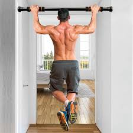
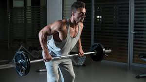

Costas em Foco

Levantamento Terra
Trabalha lombar, dorsais, pernas e antebraços.

Barra Fixa
Exercício de peso corporal excelente para dorsais e bíceps.

Remada Curvada
Fortalece dorsais, trapézio e deltoides posteriores.